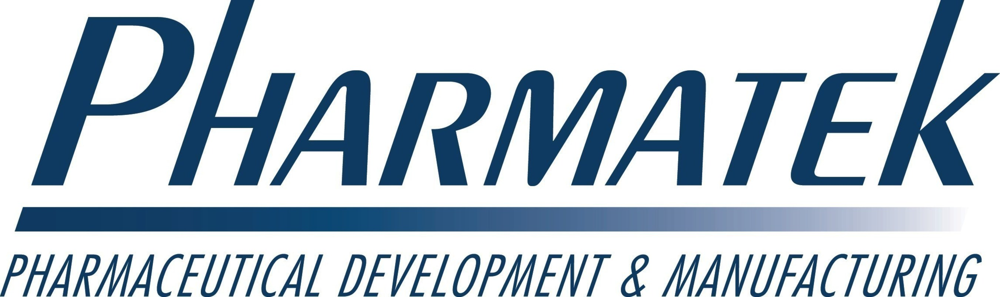

Kelly Lin
Software Engineer
Avid Python developer and open source contributor
Background
What drives me is the opportunity to bring my technical experience and analytical skills to bear on solving problems. I deeply enjoy difficult challenges and developing solutions.
I picked up programming as a way to accelerate and automate my work with formulation chemistry data, and in the process discovered that I really love to write code. Consequently, I am now seeking a career change into software engineering.
Skills
- Python
- MongoDB
- HTML5/CSS
- JavaScript
- React
Projects
Stokes-Einstein Particle Simulator
WebsiteReact application that demonstrates the influence of viscosity, temperature, and diffusion coefficient on hydrodynamic particle size.
Option Chain Scraper
WebsitePython web scraper that pulls Microsoft and Apple option chain data into a sqlite3 database that can be queried by a script that plots out prices over time. Contains a Flask backend to display database details in a browser.
Education
Lambda School

Currently enrolled full-time at Lambda School, a full-stack web development and computer science academy.
University of California, San Diego
Graduated with a Bachelors of Science in Chemistry from UC San Diego.
Work History
La Jolla Pharmaceutical Company
- Accelerated throughput of chromatographic data analysis via Python and Powershell scripting.
- Designed and performed three 6-month stability studies to support new drug indications.
Pharmatek
- Developed oral suspensions and capsule formulations for BCS Class II small molecules and steroids.
- Trained and supervised lab assistants on analysis techniques and instrumentation use.